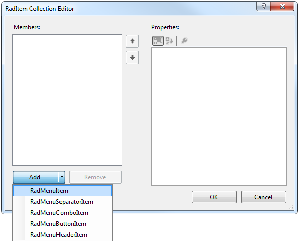
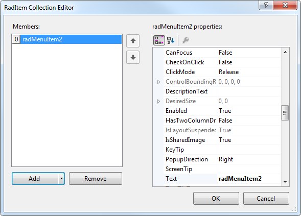
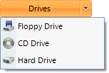

Working with RadSplitButton Items
The heart of RadSplitButton is the Items collection. This collection defines the menu items that appear when the RadSplitButton__is clicked. There are two ways to add items to a __RadSplitButton.
Adding Items at Design-time in the UI
To add menu items at design-time, click in the Items property, and then click the ellipsis button to launch the RadElement Collection Editor. Click the arrow next to the Add button to add items to the menu. You can add a variety of items, such as the RadMenuItem, to the collection.
Once you have added a RadMenuItem to the collection, it will appear in the list on the left side of the dialog. Click the RadMenuItem you wish to edit and its property grid will be accessible on the right side of the dialog.
In the property grid you will find many of the standard control properties, including Text, to control the display text of the item and ToolTipText__that displays when the mouse hovers over an item. Each __RadMenuItem also contains an Items collection of its own, allowing you to create menu hierarchies within a RadSplitButton. Other significant properties for RadSplitButton items are:
Associate an image with each item using the Image property or associate a standard ImageList component to the RadSplitButton and use the ImageIndex or ImageKey properties for the item.
PopupDirection__determines the relationship that sub items of a __RadMenuItem__will display in and can be __Left, Right, Up__or __Down.
To display sub items in two columns set __HasTwoColumns__to true and add items to the __RightColumnItems__collection.
Use CheckOnClick__to toggle a check mark next to a __RadMenuItem. This property is appropriate to use when the item doesn't contain sub items.
Adding Items at Run Time in Code
You can also add items to RadSplitButton in code at run time. The following example code illustrates programmatically adding a RadMenuItem to your button.
[C#] Adding a RadMenuItem
private void Form1_Load(object sender, EventArgs e)
{
RadMenuItem myRadMenuItem = new RadMenuItem();
myRadMenuItem.Text = "My New Item";
myRadMenuItem.Click += new EventHandler(myRadMenuItem_Click);
radSplitButton1.Items.Add(myRadMenuItem);
}
void myRadMenuItem_Click(object sender, EventArgs e)
{
MessageBox.Show((sender as RadMenuItem).Text);
}
[VB.NET] Adding a RadMenuItem
Private Sub Form1_Load(ByVal sender As System.Object, ByVal e As System.EventArgs) Handles MyBase.Load
Dim myRadMenuItem As New RadMenuItem()
myRadMenuItem.Text = "My New Item"
AddHandler myRadMenuItem.Click, AddressOf myRadMenuItem_Click
radSplitButton1.Items.Add(myRadMenuItem)
End Sub
Sub myRadMenuItem_Click(ByVal sender As Object, ByVal e As EventArgs)
MessageBox.Show((TryCast(sender, RadMenuItem)).Text)
End Sub
Create item hierarchies in code by adding new RadMenuItem objects to the Items collection of your existing RadMenuItem.
[C#] Adding a sub item
private void Form1_Load(object sender, EventArgs e)
{
radSplitButton1.Items.Add(new RadMenuItem("AAA"));
RadMenuItem mySubMenuItem = new RadMenuItem();
mySubMenuItem.Text = "Submenu Item";
mySubMenuItem.Click += new EventHandler(mySubMenuItem_Click);
RadMenuItem mainItem = radSplitButton1.Items[0] as RadMenuItem;
mainItem.Items.Add(mySubMenuItem);
}
void mySubMenuItem_Click(object sender, EventArgs e)
{
MessageBox.Show((sender as RadMenuItem).Text);
}
[VB.NET] Adding a sub item
Private Sub Form1_Load(ByVal sender As System.Object, ByVal e As System.EventArgs) Handles MyBase.Load
Dim mySubMenuItem As New RadMenuItem()
mySubMenuItem.Text = "Submenu Item"
AddHandler mySubMenuItem.Click, AddressOf mySubMenuItem_Click
Dim mainItem As RadMenuItem = TryCast(radSplitButton1.Items(0), RadMenuItem)
mainItem.Items.Add(mySubMenuItem)
End Sub
Sub mySubMenuItem_Click(ByVal sender As Object, ByVal e As EventArgs)
MessageBox.Show((TryCast(sender, RadMenuItem)).Text)
End Sub
Displaying Images with Items
You can display images as well as text on your menu items.
To add an image to your menu item, click in the Image property of the RadMenuItem, and then click the ellipsis button to launch the Select Resource dialog.
From this dialog you can select an image file from a project resource file or from an image resource on your local hard drive.
Using the Click Event
To handle the Click event of RadMenuItems on the drop down menu, locate the RadMenuItem in the drop down list in the Properties window of the Windows Form designer. Click the events button, then double-click the Click event to generate an event handler. Fill in the details of your event-handling code.
Setting the Default Item
The default item is the item whose Click event is triggered by the user pressing the button, instead of choosing from the menu. The DefaultItem can be assigned in code:
[C#] Assigning the default item
radSplitButton1.DefaultItem = mainItem;
[VB.NET] Assigning the default item
radSplitButton1.DefaultItem = mainItem